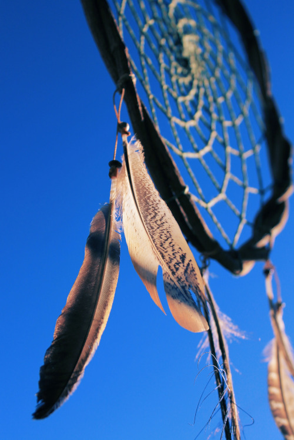

Milý čtenáři, neváhej a začni tvořit
Vítej ve světě mé autorské tvorby Dreamcatch. Zachyť magii snů a ochranu před nočními můrami. Každý lapač snů, který tvořím, je unikátní a ručně vyrobený s láskou a péčí.
Inspiruj se



Objevuj moudrost podvědomí
Mým cílem je zachytit krásu snů a vtisknout ji do každého lapače. Každý lapač snů je ručně vytvořen, aby s sebou nesl energii pozitivního myšlení a ochranu před nočními můrami.
Autorská tvorba